Portfolio
Final-year Earth Science student at the University of Manchester. This portfolio presents selected figures that were produced during undergraduate study and independent research.
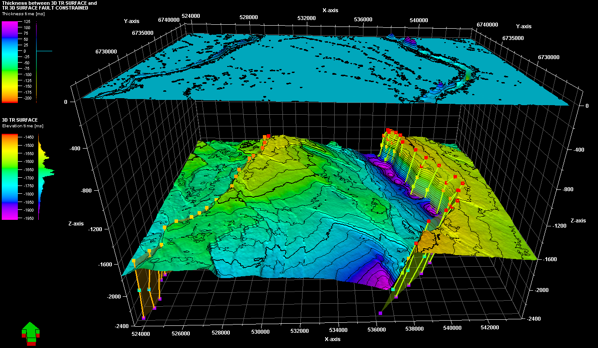
3D Top Resevoir
Top resevoir surface modelled using 3D seismic data. Includes difference map of two top resevoir surfaces, where one has been interpolated using fault constraints and the other has not.
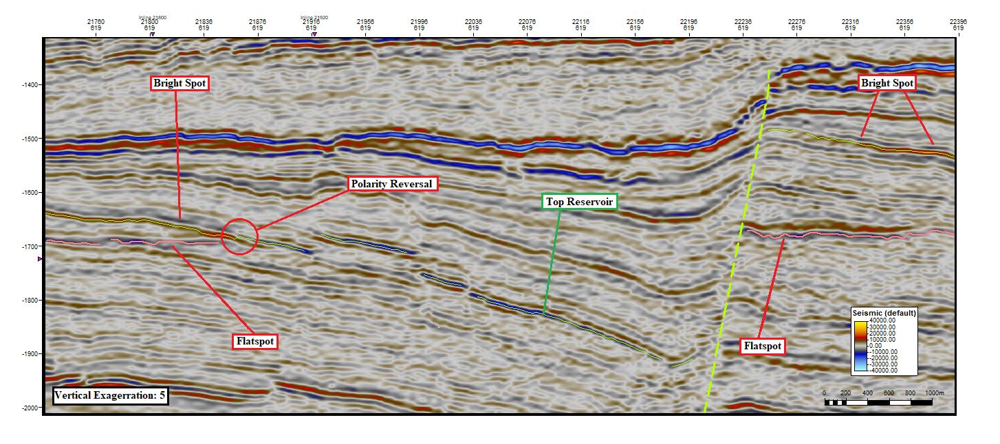
Interpreted Seismic Section
Annoated seismic section identifying different fluid effects.
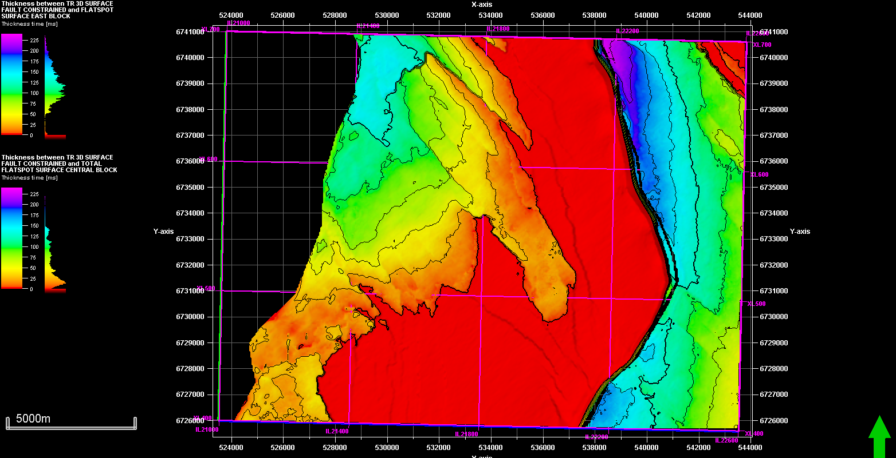
Gas Column Thickness Map
Thickness map between top resevoir and regional flatspot (gas column thickness), which was then used to calculate GRV and pore volume.
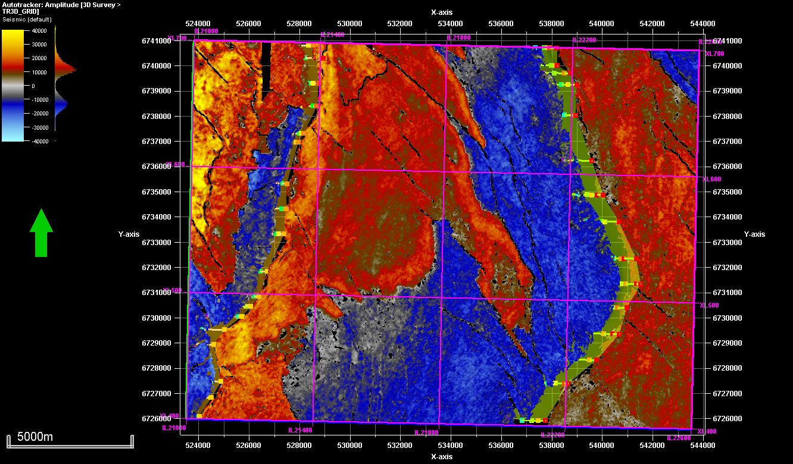
Water and Gas Leg Map
The top resevoir displayed as a positive or negative acoustic impedance change. A negative impedance contrast (blue) indcates formational brines, whereas a positive impedance contrast (red) indicates the gas-leg.
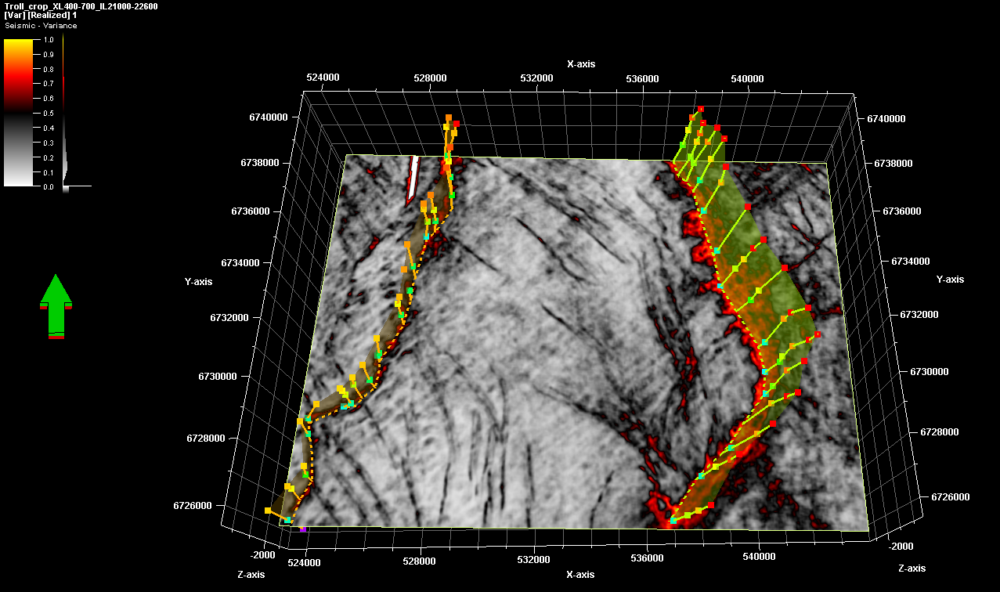
Fault Sticks - Variance Attribute
Fault stick interpretation completed using the variance attribute in a 3D seismic data set. Highlights discontinuties in strata, which are likely offset by faulting.
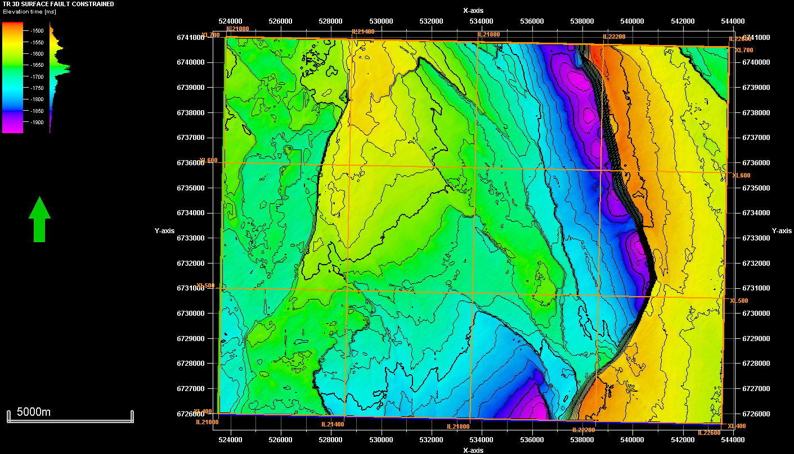
3D Top Resevoir (2)
Top resevoir surface viewed from top-down.
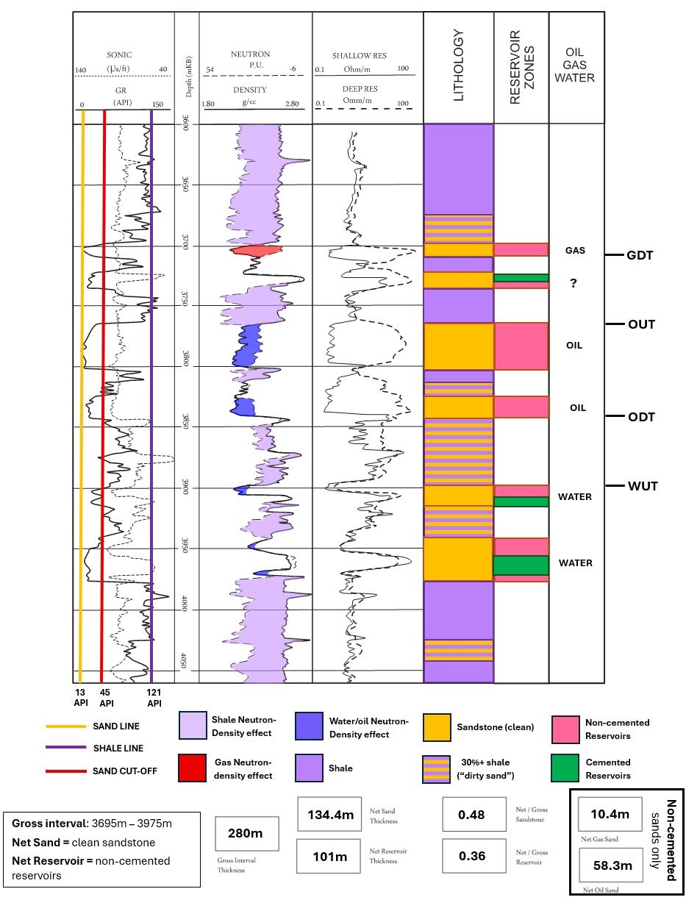
Petrophysical Interpretation 1
Full petrophysical interpretation including GR cutoff, neutron-density crossplot fluid identification, reservoir zonation, and net-to-gross calculation with fluid contacts (GDT, ODT, WUT).
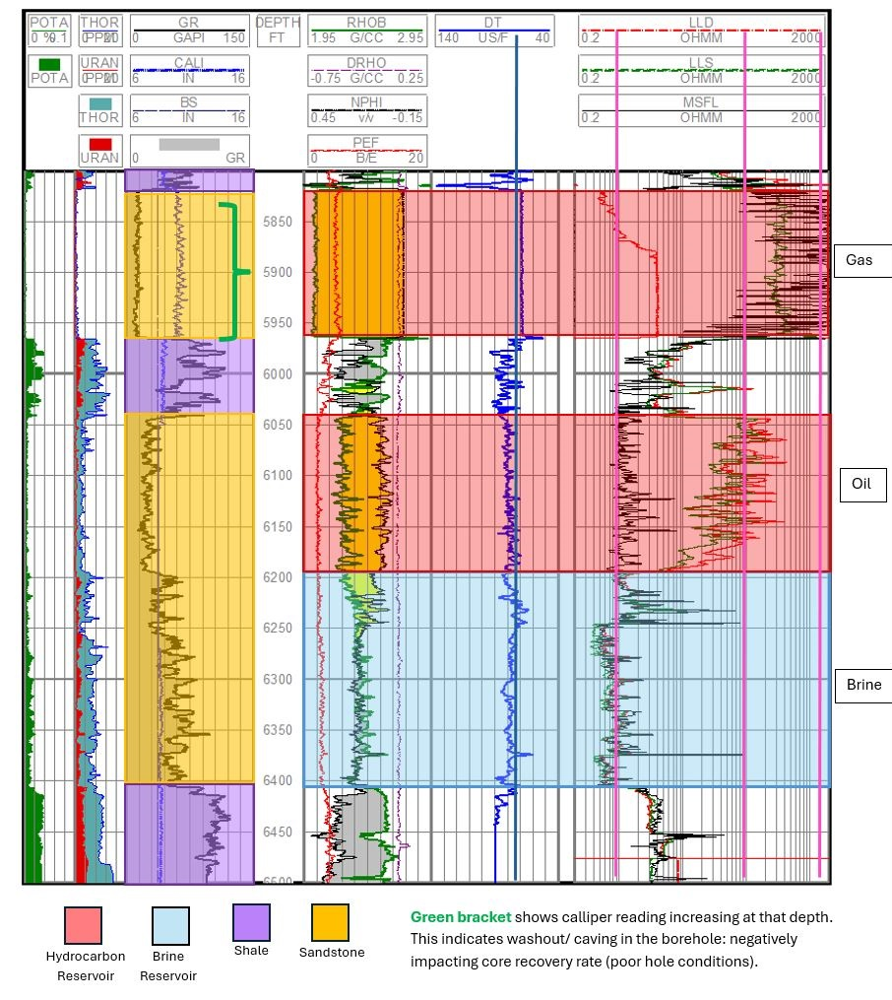
Petrophysical Interpretation 2
Lithology and fluid zone picks (gas, oil, brine) across a multi-tool wireline suite, with caliper washout.
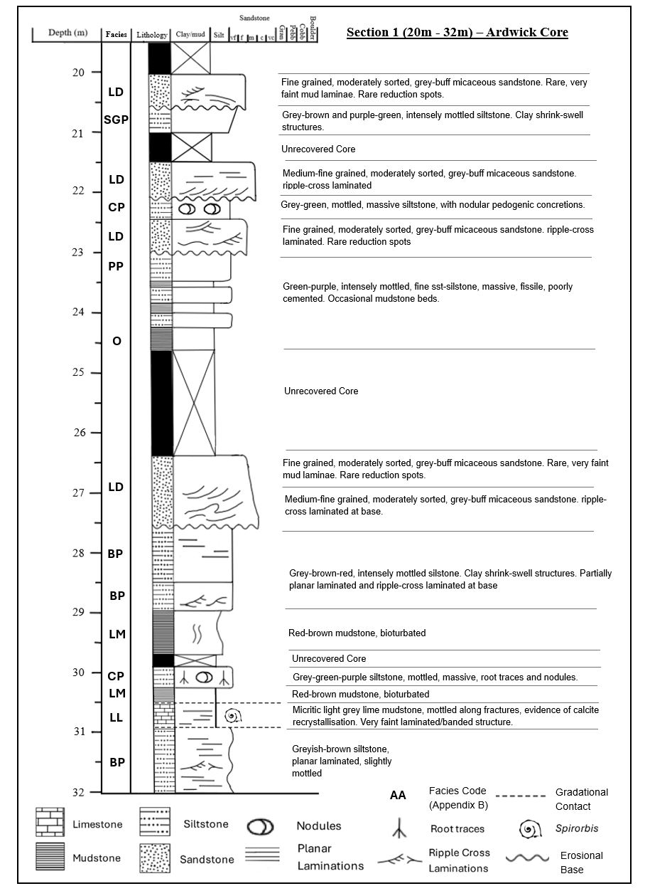
Ardwick Core — Section 1 (20–32m)
Facies-coded stratigraphic log constructed from the Ardwick Core, recovered from Edgar Norton in Ardwick, Manchester. Logs the Halesowen Formation of the Warwickshire Group, which was deposited in a fluvial-lacrustine during the Late Carboniferous.
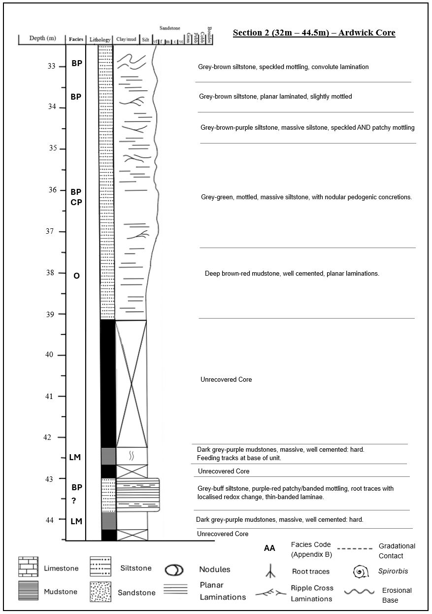
Ardwick Core — Section 2 (32–44.5m)
Facies-coded stratigraphic log constructed from the Ardwick Core, recovered from Edgar Norton in Ardwick, Manchester. Logs the Halesowen Formation of the Warwickshire Group, which was deposited in a fluvial-lacrustine during the Late Carboniferous.
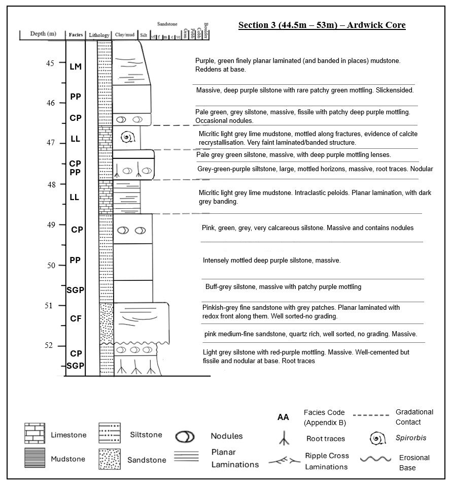
Ardwick Core — Section 3 (44.5–53m)
Facies-coded stratigraphic log constructed from the Ardwick Core, recovered from Edgar Norton in Ardwick, Manchester. Logs the Halesowen Formation of the Warwickshire Group, which was deposited in a fluvial-lacrustine during the Late Carboniferous.
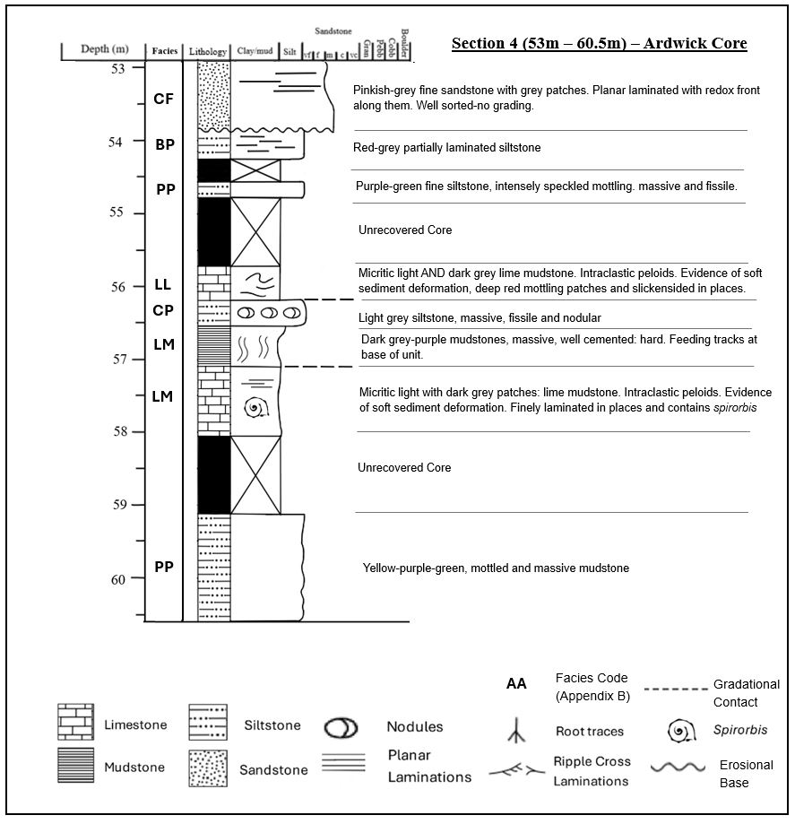
Ardwick Core — Section 4 (53–60.5m)
Facies-coded stratigraphic log constructed from the Ardwick Core, recovered from Edgar Norton in Ardwick, Manchester. Logs the Halesowen Formation of the Warwickshire Group, which was deposited in a fluvial-lacrustine during the Late Carboniferous.